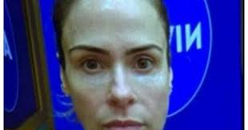

"Ana Paula Renault será a ganhadora do Big Brother Brasil 2026,
sendo sua última batalha com Tadeu Smidcht, apresentador do programa. Ela já lutou contra Sol Vega, Maxiane, Aline Riscado e muitos outros adversários
que a definiram como "desumana", "ruim" e ainda disseram que ela não seria capaz de amar um filho se ela o tivesse, por isso que Deus não havia dado um a ela.
Mil vezes eliminada, mil vezes voltaria. Ana Paula não é exemplo, mas
merece toda a compaixão e compreensão desse mundo. Ana Paula Renault é fúria com elegância, descontrole com ironia, mas de forma alguma ela se torna menos
humana. Ela é bruxa, mas diferente de pessoas que dizem terem sido feitas com tanto prazer e amor mas apenas proclamam ódio e negatividade, Ana Paula
sabe amar e é verdadeira. O Brasil te ama Ana Paula, e por isso você é a ganhadora do Big Brother Brasil 2026.